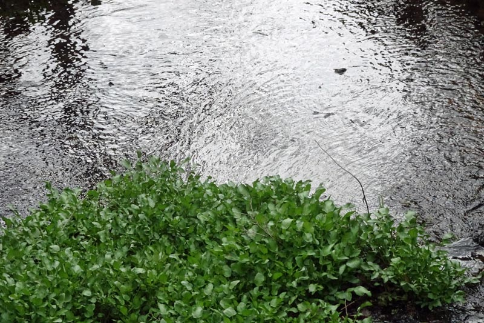

ランゴー: ばら園での遊び / ホルンボー: 弦楽四重奏曲第2番
ある日配信のおすすめに出てきたアルバム、Langgaardとあるが誰だろうと思って調べてびっくり、デンマークの作曲家ランゴーの綴りがこうだったとは知らなかった。鈴木淳史氏の本で『昆虫館』というピアノ曲が紹介されていたのを読んだことがある。前衛的と思っていたが、この室内楽曲はまったく擬古典様式のシンプルな作品。4楽章からなる組曲風の弦楽四重奏曲である。第2楽章など"モーツアルト"と題されており、第4楽章"ロココ"とも、いかにものパッセージで覆われている。続けてアルバムを聴いていると、最後の『弦楽四重奏曲第4番』で同じ主題が出てくるのであれっと思うが、ランゴーは作品の再利用を行うので有名らしい。『ばら園での遊び』の第1、第4楽章が、『第4番』の第1、第3楽章にそれぞれ手を加えた上で再利用されている。多少の再利用はよくあることだけれども、ランゴーの弦楽四重奏曲の場合は、乱れた番号付けと相俟って何が何だかよく分からなくなってしまう。幸いDACAPOのサイトなどで詳しい解説を読むことができるが、ランゴーにはどうもこういった突飛な性向があるようだ。ちなみにランゴーはニルス・ゲーゼと親戚関係にあった（父方のおばの結婚相手であるアクセル・ゲーゼがニルスの子にあたる）。
前回出てきたKontra Qも弦楽四重奏曲全集を録音していたが、このNightingale SQの『ばら園での遊び』はそれには入っておらず、初録音とのこと。音質もクリアで典雅な美しさを堪能できる。
Rued Langgaard: Rosengaardsspil, BVN 153
Nightingale String Quartet
(2012)
Youtubeにも上がっているMusic Videoはどうかと思うが、このNightingale SQは同じデンマークの作曲家ホルンボーの弦楽四重奏曲も現在のところ2枚出していて、こちらの出来もやはり高水準だと思う。ホルンボーは古くはCopenhagen SQがニールセンとの組み合わせで弦楽四重奏曲を出していたし、その後Kontra Qも全集を録音している。この『第2番』は、第二次大戦後すぐの時期に、それまでに作った10曲の習作を破棄した後、改めて取り組んだ結果の3曲（1～3番）の一つで、他と同様に東欧の民謡を思わせるモチーフが特徴的。旋律的だが甘口ではない。かといって難解な前衛でもない。突き刺さるようなモダンというよりは、演奏にもよるとは思うがソフトで理知的である。動と静の対比も決まっている。
Vagn Holmboe: String Quartet No. 2,
Op. 47, M. 161
Nightingale String Quartet
(2020)

ところで、デンマークといえば量子力学の父ともいわれる物理学者ニルス・ボーアが真っ先に思い浮かぶ。ハイゼンベルクの著書『部分と全体』(*1)（若い頃の愛読書だ）には、両物理学者の対話が多く再現されていて、中にボーアがデンマークの風土についてのユーモラスな小話をハイゼンベルクに対して披露する場面がある。
（ボーア）「デンマークにはたった一つの山しかありません。その山の高さは百六十メートルで、それが余りに高いのでわれわれは"天の山（ヒンメルスベルク）"と呼んでいます。わが国のある人が、彼のノルウェーの友人にわが国の地勢について、いくらかの印象をあたえようと、この山を示したというお話があります。しかし、このノルウェーのお客さんは小ばかにしたような顔をして、振り返りざま言いました。"こんなものは、われわれノルウェーでは穴と呼びます"と。」
より興味深いのはこの直前の対話で、それぞれの故郷の風土を比較した次のようなものである。長いので一部省略して引用する。
（ボーア）「......あなたは山にすぐ近いミュンヘンで育ちました。......山の住人たちにとっては、われわれの国があまりにも平坦過ぎることを私は知っています。ですからひょっとすると、あなたは私の故郷になじめないかも知れませんね。しかしわれわれにとっては海が非常に大切なのです。海を見はるかす時、われわれは無限大の一部分を把握したというように感じるのです。」
（ハイゼンベルク）「おっしゃることは非常によくわかります。......ここの人々のまなざしはずっと遠くの方へ向けられており、そして全く静かでした。われわれ山育ちは違っています。われわれの場合には視線はたまたますぐ近くを取り巻いている細かい個々のものから、いろいろと複雑な形をした岩の塊りとか、あるいは氷に覆われた頂きをこえて天空にまで及びます。おそらく、そのためにわれわれの所では人間がたいへん陽気なのかもしれません。」
ミュンヘン人が陽気なのはビールのせいだろうと言いたくなるが、それはともかく、ここでは「垂直の視線」が具象的・楽天的な思考と結びつき、「水平の視線」が（直接書かれてはいないが）直感的・メランコリックな思考を誘発するというような対比が透けて見える。ちょっと図式的で、風土と国民性という話に一般化するのは乱暴だし、視線を決めるのは何も山だけではない。人工物もある。それでもこの対話は、国民性というものとは別に、何か真理を含んでいるような気がする。そういえば、メシアンの『幼子イエスに注ぐ20のまなざし』はどう見ても垂直のイメージで、とても明晰であってかつ快楽に結びつく。まあ宗教の絡む面倒な話はともかく、山がちの日本で育った者としては、平坦な地形が多ければ移動や活動に困難が少なくて羨ましいと単純に考えてしまうのだが、もしデンマークの人を相手にそう言ったらどう返されるかを想像するとなかなか楽しい。
-
W. ハイゼンベルク(著), 山崎 和夫(訳), 『部分と全体』 "IV 政治と歴史についての教訓 1922-1924年", 1974(初版), みすず書房
(Apr. 27, 2024)